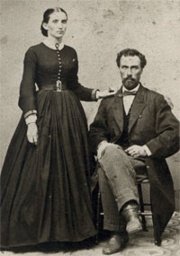
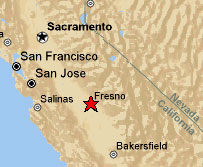
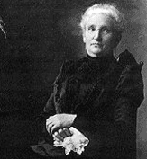
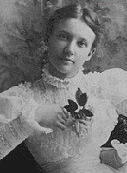

 |
William Helm William Helm was born in Ontario, Canada on March 9, 1837. He was the largest individual sheep grower in Fresno, California, and was instrumental in the growth and prosperity of the San Joaquin Valley. |
|
|
Important
Facts
|
||
| March 9, 1837 | William Helm was born in Durham, Ontario, Canada, about forty miles above Montreal, on the St. Lawrence River. He was a son of George and Mary (Oliver Helm, both of whom were born in Scotland. Source: History of Fresno County California. |  Fresno, California |
| 1856 | Helm traveled to the state of Wisconsin and stayed 3 years as a lumberman on the Chippewa River. | |
| 1859 | Helm sailed from New York City to San Francisco, California by way of Panama. | |
| He traveled to Sacramento and searched for gold in Placer country but soon found it unprofitable. He spent the next three years as a butcher in Placer County. He saved his money and decided to raise sheep for a living. Source: The Valley's Legends & Legacies by Catherine Morison Rehart. | ||
| 1861 | Civil War breaks out between the northern and southern states. |  Francis S. Newman-Helm |
| 1861 | Mr. Helm married Francis Sawyer Newman in Placer County. | |
| 1864 | Drove his sheep to Oregon, where he sold out for about $15,000. He then went back to Sacramento, where he bought more sheep. Source: Memorial and Biographical History of the counties of Fresno, Tulare, and Kern, California. | |
| 1865 | The Civil War ends. | |
| July 1865 | William Helm brought sheep to Fresno county. His initial purchase of land was six miles from the center of downtown Fresno. He was the largest wool grower in Central California. Source: The Valley's Legends & Legacies by Catherine Morison Rehart. | |
| August 12, 1867 | Jessie Marie Helm was born in Clovis, California. She married Cary Stith Cox Selma, California. They had three children, one of which was Agnes Jean Cox who married Murray Archibald Campbell. |
William Helm |
| 1869 | George L. Helm was born in Fresno and later became in charge of his father's sheep ranch. | |
| 1870 | The US Federal Census lists Wm. Helm (35), Fanny S. (29), Jess M. (3), Geo J. (1), Mary M. (3/12) living in Township 1, Fresno, California. | |
| 1871 | Francis Jayne Helm was born in Fresno. | |
| 1874 | Mary M. Helm was born in Fresno. | |
| Aug. 11, 1876 | Agnes Helm was born in Fresno. | |
| Frank M. Helm was born in Fresno and became engaged in the banking business. |  Maud Armenia Helm |
|
| 1877 | Mr. Helm made Fresno his home with a five-acre tract of land at the corner of Fresno and R streets. He was an organizer and vice-president of the Bank of Central California, and the president of the Fresno Canal and Irrigation Company. Source: Memorial and Biographical History of the counties of Fresno, Tulare, and Kern, California. | |
| May 11, 1878 | 6 of the 7 children were baptized on Thursday May 11, 1878 by the Rev. W. C. Powell who was on a Missionary trip to the Valley. Source: Saint James Episcopal Cathedral Web site. | |
| January 1882 | Maude Armenia Helm was born. Source: 1990 US Census. | |
| November 16, 1879 | Mrs. Helm was on the first communicant list of the Saint James Episcopal Church. Source: Saint James Episcopal Cathedral Web site. | |
| At Dry Creek, on section four, he bought a ranch six miles east of Fresno and acquired up to 16,000 acres, paying 1 dollar an acre from Mr. Chapman. He owned 22,000 head of sheep. Source: History of Fresno County and the San Joaquin Valley. |
Fresno Street and |
|
Mr. Helm was the largest individual sheep grower in Fresno County. In carrying his wool to market at Stockton, he used three wagons, each drawn by ten mules, and spent twelve days in making the round trip. Source: History of the State of California and Biographical Record of the San Joaquin Valley, California. |
||
| 1881 | Because of a growing family, Mr. William Helm bought the block bounded by Fresno, R, Merced and S Streets from Mr. Einstein. He built his home there in 1881 where it stood for 71 years. As their daughters married, Mr. Helm gave them parts of the block on which to build their homes. This block is now the site of the Fresno Community Hospital. Source: Saint James Episcopal Cathedral Web site. | |
| 1890 | Erected the Helm building at the southeast corner of J (Fulton) and Fresno streets. | |
| 1890 | Mrs. Helm was the first to sign the By-Laws of the St. James Guild after heading the Women's organization that preceded it, and served on the Board for many years. Source: Saint James Episcopal Cathedral Web site. | |
| June 1, 1900 | The US Census for Fresno lists William Helm (63), Francis S. (59), and Maude A (22). Source 1990 US Census for Fresno. |
Agnes Jean Cox and William Helm |
| February 16, 1892 | The Helm home was the scene of many St. James' Guild social affairs, the minutes of the Guild for February 16, 1892, state that the Violet Tea would be held at Mrs. Helm's "who offered her home as she is always willing to do." Source: Saint James Episcopal Cathedral Web site. | |
| April 22, 1906 | When Mrs. Helm died, the Saint James vestry minutes wrote: "Resolved: That this vestry, on behalf of themselves and the members of the congregation desire to place on record their sense of the great loss that this parish has sustained by the death of Mrs. William Helm. From the time this church was organized over 25 years ago, she was always the foremost and most loyal supporter of the many charitable and good works connected with the parish, and later in the building of the new church and rectory. The vestry take this opportunity to record their indebtedness for the great and many services rendered to the church by Mrs. William Helm." Source: Vestry minutes, Saint James Episcopal Cathedral Web site. | |
| April 6, 1912 | In San Francisco, William Helm endorsed the deed to the Fresno property on ‘R’ street to Jessie M. Cox. | |
| January 4, 1917 | At the request of Milton M. Dearing, son-in-law of William Helm, the deed of 1912 was filed for record and recorded. Source: Vol 629 of Deeds, pg. 53 Fresno County Records. | |
| April 10, 1919 | William Helm died at the home of his daughter. | |
| April 12, 1919 | Burial was at the Mt. View Cemetery, Fresno, California. |